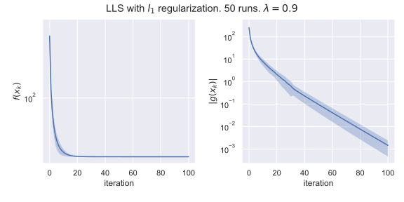

Subgradient descent
Introduction
Рассматривается классическая задача выпуклой оптимизации:
\min_{x \in S} f(x),
Подразумевается, что f(x) - выпуклая функция на выпуклом множестве S. Для начала будем рассматривать задачу безусловной минимизации (БМ), S = \mathbb{R}^n
Вектор g называется субградиентом функции f(x): S \to \mathbb{R} в точке x_0, если \forall x \in S:
f(x) \geq f(x_0) + \langle g, x - x_0 \rangle
Градиентный спуск предполагает, что функция f(x) является дифференцируемой в каждой точке задачи. Теперь же, мы будем предполагать лишь выпуклость.
Итак, мы имеем оракул первого порядка:
Вход: x \in \mathbb R^n
Выход: \partial f(x) и f(x)
Algorithm
\tag{SD} x_{k+1} = x_k - \alpha_k g_k,
где g_k - произвольный субградиент функции f(x) в т. x_k, g_k \in \partial f (x_k)
Bounds
Vanilla version
Запишем как близко мы подошли к оптимуму x^* = \text{arg}\min\limits_{x \in \mathbb{R}^n} f(x) = \text{arg} f^* на последней итерации:
\begin{align*} \| x_{k+1} - x^* \|^2 & = \|x_k - x^* - \alpha_k g_k\|^2 = \\ & = \| x_k - x^* \|^2 + \alpha_k^2 \|g_k\|^2 - 2 \alpha_k \langle g_k, x_k - x^* \rangle \end{align*}
Для субградиента: \langle g_k, x_k - x^* \rangle \leq f(x_k) - f(x^*) = f(x_k) - f^*. Из написанного выше:
\begin{align*} 2\alpha_k \langle g_k, x_k - x^* \rangle = \| x_k - x^* \|^2 + \alpha_k^2 g_k^2 - \| x_{k+1} - x^* \|^2 \end{align*}
Просуммируем полученное неравенство для k = 0, \ldots, T-1
\begin{align*} \sum\limits_{k = 0}^{T-1}2\alpha_k \langle g_k, x_k - x^* \rangle &= \| x_0 - x^* \|^2 - \| x_{T} - x^* \|^2 + \sum\limits_{k=0}^{T-1}\alpha_k^2 \|g_k^2\| \\ &\leq \| x_0 - x^* \|^2 + \sum\limits_{k=0}^{T-1}\alpha_k^2 \|g_k^2\| \\ &\leq R^2 + G^2\sum\limits_{k=0}^{T-1}\alpha_k^2 \end{align*}
Здесь мы предположили R^2 = \|x_0 - x^*\|^2, \qquad \|g_k\| \leq G. Предполагая \alpha_k = \alpha (постоянный шаг), имеем:
\begin{align*} \sum\limits_{k = 0}^{T-1} \langle g_k, x_k - x^* \rangle &\leq \dfrac{R^2}{2 \alpha} + \dfrac{\alpha}{2}G^2 T \end{align*}
Минимизация правой части по \alpha дает \alpha^* = \dfrac{R}{G}\sqrt{\dfrac{1}{T}}
\begin{align*} \tag{Subgradient Bound} \sum\limits_{k = 0}^{T-1} \langle g_k, x_k - x^* \rangle &\leq GR \sqrt{T} \end{align*}
Тогда (используя неравенство Йенсена и свойство субградиента f(x^*) \geq f(x_k) + \langle g_k, x^* - x_k \rangle) запишем оценку на т.н. Regret, а именно:
\begin{align*} f(\overline{x}) - f^* &= f \left( \frac{1}{T}\sum\limits_{k=0}^{T-1} x_k \right) - f^* \leq \dfrac{1}{T} \left( \sum\limits_{k=0}^{T-1} (f(x_k) - f^* )\right) \\ & \leq \dfrac{1}{T} \left( \sum\limits_{k=0}^{T-1}\langle g_k, x_k - x^* \rangle\right) \\ & \leq G R \dfrac{1}{ \sqrt{T}} \end{align*}
Важные моменты:
- Получение оценок не для x_T, а для среднего арифметического по итерациям \overline{x} - типичный трюк при получении оценок для методов, где есть выпуклость, но нет удобного убывания на каждой итерации. Нет гарантий успеха на каждой итерации, но есть гарантия успеха в среднем
- Для выбора оптимального шага необходимо знать (предположить) число итераций заранее. Возможный выход: инициализировать T небольшим значением, после достижения этого количества итераций удваивать T и рестартовать алгоритм. Более интеллектуальный способ: адаптивный выбор длины шага.
Steepest subgradient descent
Попробуем выбирать на каждой итерации длину шага более оптимально. Тогда:
\| x_{k+1} - x^* \|^2 = \| x_k - x^* \|^2 + \alpha_k^2 \|g_k\|^2 - 2 \alpha_k \langle g_k, x_k - x^* \rangle
Минимизируя выпуклую правую часть по \alpha_k, получаем:
\alpha_k = \dfrac{\langle g_k, x_k - x^*\rangle}{\| g_k\|^2}
Оценки изменятся следующим образом:
\| x_{k+1} - x^* \|^2 = \| x_k - x^* \|^2 - \dfrac{\langle g_k, x_k - x^*\rangle^2}{\| g_k\|^2}
\langle g_k, x_k - x^*\rangle^2 = \left( \| x_k - x^* \|^2 - \| x_{k+1} - x^* \|^2 \right) \| g_k\|^2
\langle g_k, x_k - x^*\rangle^2 \leq \left( \| x_k - x^* \|^2 - \| x_{k+1} - x^* \|^2 \right) G^2
\sum\limits_{k=0}^{T-1}\langle g_k, x_k - x^*\rangle^2 \leq \sum\limits_{k=0}^{T-1}\left( \| x_k - x^* \|^2 - \| x_{k+1} - x^* \|^2 \right) G^2
\sum\limits_{k=0}^{T-1}\langle g_k, x_k - x^*\rangle^2 \leq \left( \| x_0 - x^* \|^2 - \| x_{T} - x^* \|^2 \right) G^2
\dfrac{1}{T}\left(\sum\limits_{k=0}^{T-1}\langle g_k, x_k - x^*\rangle \right)^2 \leq \sum\limits_{k=0}^{T-1}\langle g_k, x_k - x^*\rangle^2 \leq R^2 G^2
Значит,
\sum\limits_{k=0}^{T-1}\langle g_k, x_k - x^*\rangle \leq GR \sqrt{T}
Что приводит к абсолютно такой же оценке \mathcal{O}\left(\dfrac{1}{\sqrt{T}}\right) на невязку по значению функции. На самом деле, для такого класса функций нельзя получить результат лучше, чем \dfrac{1}{\sqrt{T}} или \dfrac{1}{\varepsilon^2} по итерациям
Online learning
Рассматривается следующая игра: есть игрок и природа. На каждом из k = 0, \ldots, T-1 шагов: * Игрок выбирает действие x_k * Природа (возможно, враждебно) выбирает выпуклую функцию f_k, сообщает игроку значение f(x_k), g_k \in \partial f(x_k) * Игрок вычисляет следующее действие, чтобы минимизировать регрет:
\tag{Regret} R_{T-1} = \sum\limits_{k = 0}^{T-1} f_k(x_k) - \min_{x} \sum\limits_{k = 0}^{T-1} f_k(x)
В такой постановке цель игрока состоит в том, чтобы выбрать стратегию, которая минимизирует разницу его действия с наилучшим выбором на каждом шаге.
Несмотря на весьма сложную (на первый взгляд) постановку задачи, существует стратегия, при которой регрет растет как \sqrt{T}, что означает, что усредненный регрет \dfrac{1}{T} R_{T-1} падает, как \dfrac{1}{\sqrt{T}}
Если мы возьмем оценку (Subgradient Bound) для субградиентного метода, полученную выше, мы имеем:
\begin{align*} \sum\limits_{k = 0}^{T-1} \langle g_k, x_k - x^* \rangle &\leq G \|x_0 - x^*\| \sqrt{T} \end{align*}
Однако, в её выводе мы нигде не использовали тот факт, что x^* = \text{arg}\min\limits_{x \in S} f(x). Более того, мы вообще не использовали никакой специфичности точки x^*. Тогда можно записать это для произвольной точки y:
\sum\limits_{k = 0}^{T-1} \langle g_k, x_k - y \rangle \leq G \|x_0 - y\| \sqrt{T}
Запишем тогда оценки для регрета, взяв y = \text{arg}\min\limits_{x \in S}\sum\limits_{k = 0}^{T-1} f_k(x):
\begin{align*} R_{T-1} &= \sum\limits_{k = 0}^{T-1} f_k(x_k) - \min_{x} \sum\limits_{k = 0}^{T-1} f_k(x) = \sum\limits_{k = 0}^{T-1} f_k(x_k) - \sum\limits_{k = 0}^{T-1} f_k(y) = \\ &= \sum\limits_{k = 0}^{T-1} \left( f_k(x_k) - f_k(y)\right) \leq \sum\limits_{k = 0}^{T-1} \langle g_k, x_k - y \rangle \leq \\ &\leq G \|x_0 - y\| \sqrt{T} \end{align*}
Итого мы имеем для нашей стратегии с постоянным шагом:
\overline{R_{T-1}} = \dfrac{1}{T}R_{T-1} \leq G \| x_0 - x^* \| \dfrac{1}{\sqrt{T}}, \qquad \alpha_k = \alpha = \dfrac{\|x_0 - x^*\|}{G}\sqrt{\dfrac{1}{T}}
Examples
Least squares with l_1 regularization
\min_{x \in \mathbb{R}^n} \dfrac{1}{2}\|Ax - b\|_2^2 + \lambda \|x\|_1
Algorithm will be written as:
x_{k+1} = x_k - \alpha_k \left( A^\top(Ax_k - b) + \lambda \text{sign}(x_k)\right)
where signum function is taken element-wise.

Support vector machines
Let D = \{ (x_i, y_i) \mid x_i \in \mathbb{R}^n, y_i \in \{\pm 1\}\}
We need to find \omega \in \mathbb{R}^n and b \in \mathbb{R} such that
\min_{\omega \in \mathbb{R}^n, b \in \mathbb{R}} \dfrac{1}{2}\|\omega\|_2^2 + C\sum\limits_{i=1}^m max[0, 1 - y_i(\omega^\top x_i + b)]
Bounds
| Conditions | f(\bar{x}) - f(x^*)\leq | Type of convergence | \Vert x_k - x^* \Vert \leq |
|---|---|---|---|
| Convex Lipschitz-continuous function(G) |
\mathcal{O}\left(\dfrac{1}{\sqrt{k}} \right) \; \dfrac{GR}{\sqrt{k}} | Sublinear | |
| Convex Lipschitz-continuous gradient (L) |
\mathcal{O}\left(\dfrac{1}{k} \right) \; \dfrac{LR^2}{k} | Sublinear | |
| \mu-Strongly convex Lipschitz-continuous gradient(L) |
Linear | (1 - \eta \mu)^k R^2 | |
| \mu-Strongly convex Lipschitz-continuous hessian(M) |
Locally linear R < \overline{R} |
\dfrac{\overline{R}R}{\overline{R} - R} \left( 1 - \dfrac{2\mu}{L+3\mu}\right) |
- R = \| x_0 - x^*\| - initial distance
- $\overline{R} = \dfrac{2\mu}{M}$
- $\overline{x} = \dfrac{1}{k}\sum_{i=1}^k x_i$
- $\|g_k\| \leq G$
Code
- Open In Colab{: .btn } - Wolfe’s example and why we usually have oscillations in non-smooth optimization.
- Open In Colab{: .btn } - Linear least squares with l_1- regularization.
References
- Great cheatsheet by Sebastian Pokutta
- Lecture on subgradient methods @ Berkley
- Illustration of l1 regularization
{kind=link}